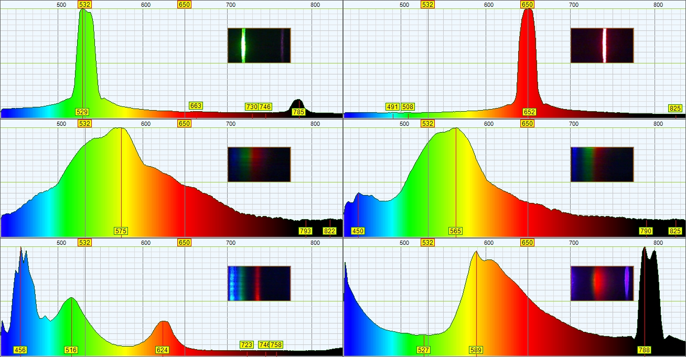

My purpose in this project was to build a spectroscope to analyze plasma in our fusor chamber. I knew that we didn’t need accuracy of lab grade spectroscope so I decided to make my own. To cut the cost I bought cheapest camera due to 640px horizontal resolution I was convinced it was enough. And it was… But, very low sensitivity of sensor and high noise levels made this camera useless if it comes to analyzing light sources as weak as glow discharge in our chamber. Nevertheless I still managed to use it to measure some basics stuff. Next version of spectroscope will use prism instead of diffraction grating (to minimize loss) and will have much better sensor than one used in this project.

Picture above shows assembled spectroscope. It is constructed out of (in order): slit , collimating lens, diffraction grating, camera lens and sensor. Interior was painted black to prevent reflections. Next model will have a regulated slit and regulated angle of sensor. Another problem was diffraction grating constant as wavelengths of UV and IR were overlapping it was unclear what was going on whilst using 405nm laser. As bad as things could be with this project it still worked. Below are shown examples from different light sources.
1)green laser 2)red laser 3)white led 4) phone flashlight 5)RGB white led 6)pink marker fluorescence
Program used to acquire the data was Theremino_Spectrometer and can be found on: https://www.theremino.com/ . I used laser to calibrate program. In first picture we can see green laser pointer and its second frequency in infrared spectrum which is actually the wavelength that the laser emits before it’s beamed through wavelength shifting crystal that produces green light. We can also see that white led sources have quite smooth spectrum but an RGB white led has three separate peaks for corresponding diodes. In last example we can see the problem with overlapping frequencies as the “infrared” peak is actually a second order 405 nm peak from laser used to fluoresce pink marker.